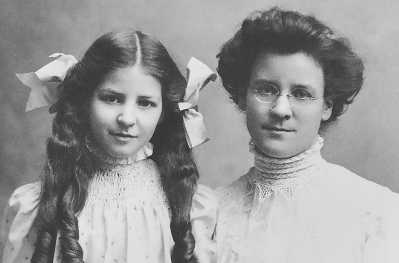

Quem foi Myers Briggs?
Primeiramente, precisamos esclarecer que o MBTI foi criado por duas pessoas: Katharine Cook Briggs e sua filha Isabel Briggs Myers. O interesse de Katharine no estudo da personalidade se deu a partir da leitura do livro “Os Tipos Psicológicos”, de C.G Jung (1921). A teoria do renomado psiquiatra suíço propunha que as pessoas eram diferentes tanto na forma como enxergavam o mundo e recebiam informações, até no que diz respeito às suas tomadas de decisões.
A mãe compartilhou as descobertas e seus pensamentos a respeito do livro com sua filha, que inicialmente não demonstrou muito interesse em uma colaboração. Katharine se dedicava a compreender o desenvolvimento humano e havia uma aspiração de fazer a teoria da personalidade acessível para os leigos. Enquanto isso, sua filha se empenhava em projetos pessoais e na criação de seus filhos.
Anos depois, após algumas leituras específicas, Isabel expressou para sua mãe o desejo de se envolver com a tarefa de alocar trabalhadores para o nicho certo dentro do mercado de trabalho. Katharine então propôs que elas desenvolvessem uma ferramenta baseada na teoria dos tipos psicológicos que ela havia estudado por tanto tempo.
Isabel se envolveu então na elaboração de um questionário que identificaria o tipo psicológico da pessoa. Ela escreveu centenas de perguntas, sempre as testando diversas vezes com pessoas conhecidas. A contribuição de sua mãe se deu a partir do conhecimento que ela havia adquirido em muitos anos de estudos, constituindo a parte teórica do trabalho. Eventualmente, Isabel selecionou as perguntas que seriam utilizadas no MBTI.
Vale ressaltar que todo esse processo aconteceu em um período pós Segunda Guerra Mundial. Tendo em vista esse contexto, dizem que as criadoras tiveram duas principais motivações com a elaboração da ferramenta. A primeira seria o propósito de alocar trabalhadores em seus devidos lugares no mercado de trabalho – incluindo as indústrias militares. A segunda seria a promoção de mais tolerância e compreensão ao ajudar as pessoas a reconhecer o valor das diferenças individuais, fomentando a paz mundial. Apesar dessas terem sido as motivações iniciais, a utilização do MBTI foi muito ampliada de lá para cá.
A ferramenta indica aspectos da personalidade, proporcionando autoconhecimento a fim de trabalhar o desenvolvimento não só profissional, como pessoal do sujeito. O objetivo de saber sobre cada tipo de personalidade do MBTI é entender e admirar as diferenças entre as pessoas, aperfeiçoando assim não só as relações de trabalho, como as pessoais também.
Foto de Isabel e sua mãe Katharine